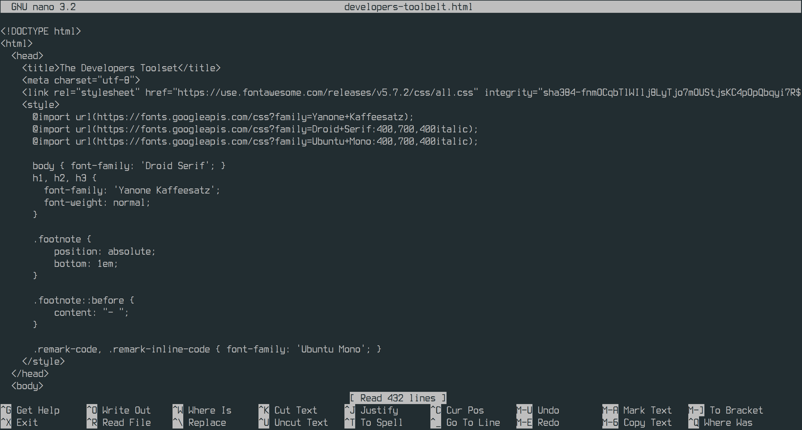
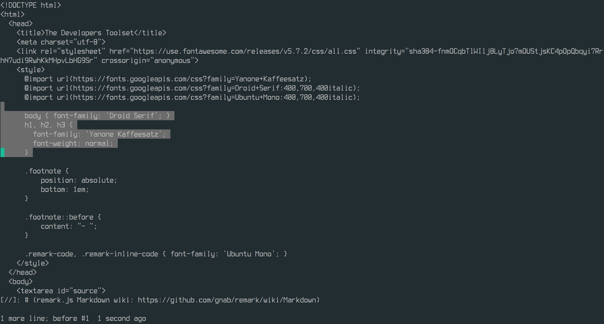

[//]: # (remark.js Markdown wiki: https://github.com/gnab/remark/wiki/Markdown) class: middle .right[  ] # The Developer's Toolbelt ### Daniel Rollins & David Sequero _Thursday 21st February 2019_ .right[] .right[] ??? We are going to be throwing a lot at you. Some of it in more depth than others but the goal is to give you exposure to these tools and explain why they are useful, not to teach them in depth --- # Overview <i class="fas fa-terminal" style="padding-right:1em; font-size:4em; float: right;"></i> * Terminal/CLI * What is it? * Filesystem navigation * Text manipulation * Globbing * What is shell scripting? ??? Why is it called a terminal? -- <i class="fas fa-code" style="color: teal; float: right; font-size:4em"></i> * Editors & IDEs * CLI text editors * Graphical text editors * Integrated Development Environments (IDEs) -- <i class="fas fa-step-forward" style="color: purple; padding-right:1em; float: right; font-size:4em"></i> * Debugging * What is debugging? * Examples -- <i class="fas fa-code-branch" style="color: orange; padding-right:2em; float: right; font-size:4em"></i> * Source Control * What is source control * Why would you need it? --- # Overview * Productivity * Communication * Collaboration * Project management -- * Webhosting * Serving a website on the internet -- * The Cloud --- layout: true # <i class="fas fa-terminal"></i> The Terminal --- ## A Wikipedia definition > A computer terminal is an electronic or electromechanical hardware device > that is used for entering data into, and displaying or printing data from, > a computer or a computing system. .footnote[https://en.wikipedia.org/wiki/Computer_terminal] --- ## A Wikipedia definition > A computer terminal is an electronic or <b>electromechanical</b> hardware > device that is used for entering data into, and displaying or printing data > from, a computer or a computing system. .center[ <img src="https://upload.wikimedia.org/wikipedia/commons/thumb/2/2c/IBM2741.JPG/1920px-IBM2741.JPG" style="width: 50%" /> ] .footnote[https://en.wikipedia.org/wiki/Computer_terminal] --- .center[ <img src="https://upload.wikimedia.org/wikipedia/commons/thumb/9/99/DEC_VT100_terminal.jpg/1920px-DEC_VT100_terminal.jpg" style="width: 70%" /> ] .footnote[https://en.wikipedia.org/wiki/VT100] --- layout: false # <i class="fas fa-terminal"></i> The Terminal _Emulator_ <img src="https://2.bp.blogspot.com/-jQc4Uoy6D5s/V1cI7q4q2pI/AAAAAAAAGPE/xjIdRF544JsZc_iI4yByCKvXRb25GjSTgCLcB/s1600/08%2BXfce4%3BTerminal.png" style="width:100%" /> ??? Or pseudo tty (pty) Often called the shell. Not quite the same thing but it's ok to think of it that way for now. --- background-image: url(https://i.giphy.com/media/eauCbbW6MvqKI/giphy.webp) background-size: 100% --- class: center middle layout: true # <i class="fas fa-terminal"></i> Filesystem navigation --- ## `pwd` - print name of current/working directory As simple as it sounds. ??? Before you can navigate you need to know where you are! A terminal is always in what we call a working directory. For a new shell this is usually your home directory. Example: pwd directory in current terminal open new terminal and pwd again The begining slash means it's an absoluely path (from the root of the filesystem) --- ## `ls`: list directory contents Prints out what is in a specific directory. -- .left[ #### Examples: * `ls` * `ls --all` * `ls some/directory` * `ls --recursive` ] ??? Introduce flags here --- ## `cd` - change the current directory Changes the current working directory of the shell, so other commands can be run there. -- .left[ #### Examples: * `cd /home/djr/some/absolute/path` * `cd some/relative/path` * `cd ~/some/path/relative/to/home` * `cd -` ] --- --- ### `find`: search for files in a directory hierarchy .left[ #### Examples: * `find -name "hello.txt"` * `find -type d` * `find .` ] ??? find will just list all files by default, like ls --recursive --- ### globbing: specify path based on a pattern -- .left[ #### Examples: * `echo *` * `echo *.txt` * `echo /home/djr/**/*.tar.*` ] ??? --- layout: true class: center middle # <i class="fas fa-terminal"></i> File manipulation --- ## `cat`: concatenate files and print on the standard output Take a list of files and print their outputs one after another ??? What is standard output? -- .left[ #### Examples: * `cat README.md` * `cat *.md` * `cat examples/*` ] --- ## `grep`: global regular expression print ??? literal meaning is confusing so lets simplify it. --- ## <strike>`grep`: global regular expression print</strike> ## `grep`: print lines that match patterns --- ## `grep`: print lines that match patterns .left[ #### Examples: * `grep "word" file.txt` * `grep --recursive "word" directory/` * `grep --ignore-case "word" file.txt` * `grep --count "word" file.txt` ] --- ## `cp`: copy files and directories Takes a path a file and new path that you would like to copy the file to. -- .left[ #### Examples: * `cp source.txt target.txt` * `cp --recursive source-dir target-dir` * `cp source1.txt source2.txt target-dir` ] ??? Second example: copying a directory requires a flag because it can be expensive. --- ## `mv`: move (rename) files Takes a path a file and new path that you would like to copy the file to. -- .left[ #### Examples: * `mv source.txt target.txt` * `mv source-dir target-dir` * `mv source1.txt source-dir target-dir` ] ??? moving a directory doesn't require a flag because it's not cloning a load of stuff, it's just changing a name. --- layout: true class: middle center # <i class="fas fa-terminal"></i> Getting help --- ## `--help`/`-h`: help flag for terminal programs -- .left[ #### Examples: * `grep --help` * `mv --help` ] ??? There is no clear standard (see mv), but in some cases, -h will give short help and --help will give longform help --- ## `man`: open the reference manual for the specified program -- .left[ #### Examples: * `man grep` * `man mv` * `man man` ] ??? Generally a lot more in-depth and are nagivated in a pager. mention gimme gimme gimme easter egg. (man without args between midnight and quarter-past. --- ## internet: search engines, stack-overflow, etc. ??? If you're unsure how to solve a particular problem, googling it will reveal surprising results --- layout: false background-image: url(https://i.giphy.com/media/eauCbbW6MvqKI/giphy.webp) background-size: 300% --- class: center middle # <i class="fas fa-terminal"></i> Shell scripting -- The composition of many shell commands into a file or a pipeline in order to do something more complex. -- .left[ #### Example * Bulk renaming a load of files ] ??? I am going to use a lot of things than I haven't shown you here, but there is going to be a whole shellscripting course in the future. Any questions before moving on? --- class: middle # <i class="fas fa-code"></i> Editors & IDEs ## Lets change some file contents --- layout: true # <i class="fas fa-code"></i> Terminal Editors --- class: middle * Run inside of a terminal (obviously) * Are generally shipped with all *nix systems * Incredibly lightweight * Pretty bare-bones by default, but can be very powerful when understood and customised * May have steep learning curves ## Why? * Great for quickly editing a file when you're already in a terminal * Can be incorporated into scripts if needs be --- <h2>Nano</h2>  --- <h2>Vim</h2>  ??? Don't let the simple-looking interfaces fool you, these can be incredibly powerful editors if you spend the time learn and customise them. They aren't really for beginners because they have steep learning curves, but they are worth looking at in the future. They are great for quickly opening a file to do a simple edit without having to leave the terminal and load a more bulky program. DEMO VIM WITH NICE INTERFACE HERE! --- ### Just remember one thing for now <img src="http://devhumor.com/content/uploads/images/December2017/quit-vim.png" style="float:right; width: 50%"/> ## Vim - `:qa!` ## Nano = `Ctrl-x` then '`n`' ??? There is often a joke about not being able to quit vim And you may accidentally find your self in vim when using other tools, because they assume that's the editor you want to use --- layout: true # <i class="fas fa-code"></i> GUI Text Editors --- class: middle * Simple WYSIWYG interface (Buttons, menus and the usual shortcuts) * May have more flashy defaults than terminal emulator (syntax highlighting, auto-complete) ## Why? * Great for edit configuration scripts or simple programming tasks * Lightweight so you can have loads of them open --- Notepad++ --- Sublime Text --- Emacs --- VSCode (almost an IDE) --- layout: true ## <i class="fas fa-code"></i> Integrated Development Environments (IDEs) --- * Lots of features that help in large programming tasks * Lots of introspection into the programming language for auto-completion, code analysis and code generation * Can run from inside the program * Debugger (more on that later) * Often very heavyweight (can't run too many instance at once!) * Usually specific to a single programming language ## Why? * If you are using a specific language you will possibly be more productive with an IDE --- #### IntelliJ <img src="https://upload.wikimedia.org/wikipedia/commons/thumb/2/27/IntelliJIDEA_2016.3_Community.png/1200px-IntelliJIDEA_2016.3_Community.png" style="width:100%"/> --- #### PyCharm <img src="https://www.jetbrains.com/pycharm/img/screenshots/complexLook@2x.jpg" style="width:100%"/> --- #### Microsoft Visual Studio <img src="http://getintopc.com/wp-content/uploads/2016/04/Microsoft-Visual-Studio-2015-Professional-Update-2-ISO-Offline-Installer-Download.png" style="width:100%"/> --- #### XCode <img src="https://developer.apple.com/xcode/images/xcode-hero-secondary-large_2x.png" style="width:100%"/> --- layout: true class: middle center # <i class="fas fa-step-forward"></i> Debugging --- <img src="https://cdn0.tnwcdn.com/wp-content/blogs.dir/1/files/2013/09/bug.jpg" /> --- ## IntelliJ debugger --- ## Chrome/Firefox dev tools --- layout: true class: middle # <i class="fas fa-code-branch"></i> Version Control -- As a project grows and becomes more complex we need some way to robustly handle: * Versioning * Rolling back Changes * Collaboration * Back-ups ??? : Versioning: Knowing exactly what's in a particular release : Rolling Back Changes: Easily undo mistakes or uneeded changes : Collaboration: Most projects don't just have on person working on them : Back ups: You really don't want to lose your hard work. --- .center[ <img src="http://ipengineer.net/wp-content/uploads/2015/04/git-logo.jpg" style="width: 30%"/> ] Version Control Software (VCS) is a set of tools for managing changes to a set of files. It is used in many software projects to manage source code and is often called Source Code Management (SCM) or Revision Control ??? One of the most popular is Git Showing to use is out of scope Show them codeup github site --- layout: false # Productivity .left[] --- # Productivity * Communication and Collaboration * IRC and mailing lists (seriously) * Slack, Gitter * Google Hangouts, appear.in * Code hosting sites: GitHub, GitLab, BitBucket -- * Project Management * Work: Jira, Trello * Knowledge sharing: Confluence, MediaWiki, GitHub Wiki * Make diagrams: draw.io --- # Web Hosting * Web hosting * Conventional web hosting sites. e.g GoDaddy * Netlify * GitHub Pages ] ??? GoDaddy lets you upload your website via FTP or some other mechanism. You have little control over where your app lives or how the underlying server is configured. Cheap. Netlify allows you to push your code repo through a build pipeline that will ultimately deploy a site ready to go (HTTPS and all). Free. GitHub Pages are static pages served straight from a GitHub repo. Also free. ---  --- # The Ultimate Tool: The Cloud * Computing as a service -- * ~~Computing~~ Anything as a service -- * Servers * Networking -- * Data stores and databases -- * Web APIs * Development Tools -- * Security -- * Game Development -- * Natural speech, language translation * Machine Learning and AI -- * Streaming, media transcoding -- * IoT, satellites, VR, AR, blockchain, robots... (*oh my!*) -- * Let's run some software on the cloud! ``` $ curl https://h9vooqxpub.execute-api.eu-west-1.amazonaws.com/test ``` -- ``` $ curl https://h9vooqxpub.execute-api.eu-west-1.amazonaws.com/test?name=David ``` --- # Getting Help * CodeUp Leeds Slack! * StackOverflow: Q&A format * Official Documentation * DuckDuckGo Bangs: `!js array map` --- # Setting up a local development environment: Easy Mode * Your workstation is the environment -- .center[] --- # Local Development Environments: VMs * Virtual machines * A computer within your computer * Completely isolated from your actual software -- .center[] -- * Cumbersome to manage! --- # Advanced Development Environment Setup * Vagrant ```ruby # -*- mode: ruby -*- # vi: set ft=ruby : Vagrant.configure("2") do |config| config.vm.define "ubuntu" do |ubuntu| ubuntu.vm.box = "ubuntu/xenial64" ubuntu.vm.hostname = "ubuntu" ubuntu.vm.network :private_network, type: "dhcp" ubuntu.vm.provider "virtualbox" do |vb| vb.customize ["modifyvm", :id, "--memory", 1024] vb.customize ["modifyvm", :id, "--cpus", 1] end end end ``` -- * Docker ```bash $ docker run --rm -it python:3 python ``` --- # Useful Links * hacker-tools.github.io * explainshell.com * devdocs.io --- class: center # Let Us Know How We Did .center[] https://bit.ly/2V7axKP --- class: center, middle <div style="font-size: 2rem;background-color: #eee; padding: 0.5rem; line-height: 0.5rem;"> <pre> [codeup@iw]$ man man </pre> </div> --- # Credits https://www.theregister.co.uk/2018/11/20/pure_storage_hybrid_cloud/